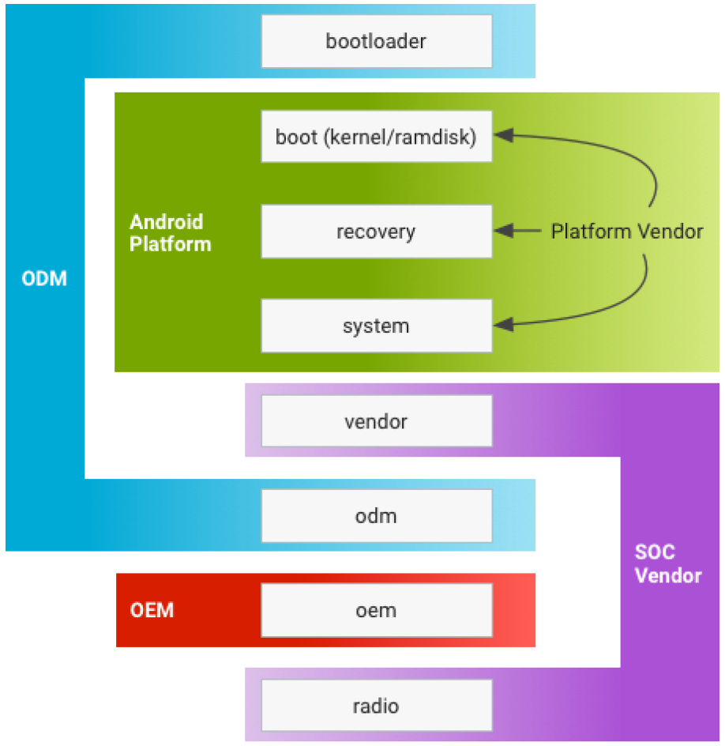

Android学习笔记
Table of Contents
1 通用概念
1.1 Android框架图

1.2 Android应用程序框架
1.3 UI基本开发
1.4 Fragment
1.5 进程与线程
Android世界的Process按优先级分为如下几类：
- Top
- Active
- High
- Visbile
- Service
- Low
- Background
- Empty
进程的优先级从高到低依次分为五类，越往下，在内存紧张的时候越有可 能被系统杀掉。简而言之，越是容易被用户感知到的进程，其优先级必 定更高。
1.5.1 线程调度（Thread Scheduling）
Linux系统的调度器在分配time slice的时候，采用的 CFS（completely fair scheduler）策略。这种策略不但会参考单个 线程的优先级，还会追踪每个线程已经获取到的time slice数量，如 果高优先级的线程已经执行了很长时间，但低优先级的线程一直在等 待，后续系统会保证低优先级的线程也能获取更多的CPU时间。显然使 用这种调度策略的话，优先级高的线程并不一定能在争取time slice 上有绝对的优势，所以Android系统在线程调度上使用了cgroups的概 念，cgroups能更好的凸显某些线程的重要性，使得优先级更高的线程 明确的获取到更多的time slice。
Android将线程分为多个group，其中两类group尤其重要。一类是 default group，UI线程属于这一类。另一类是background group，工 作线程应该归属到这一类。background group当中所有的线程加起来 总共也只能分配到5～10%的time slice，剩下的全部分配给default group，这样设计显然能保证UI线程绘制UI的流畅性。
Android开发者需要显式的将工作线程归于background group以降低工 作线程的优先级：
new
Thread(
new
Runnable() {
@Override
public
void
run() {
Process.setThreadPriority(Process.THREAD_PRIORITY_BACKGROUND);
}
}).start();
所以在我们决定新启一个线程执行任务的时候，首先要问自己这个任 务在完成时间上是否重要到要和UI线程争夺CPU资源。如果不是，降低 线程优先级将其归于background group，如果是，则需要进一步的 profile看这个线程是否造成UI线程的卡顿。
1.5.2 启动线程
- new Thread()
这是Android系统里开线程最简单的方式，也只能应用于最简单的场 景，简单的好处却伴随不少的隐患。
public void runCode(View v) { log("Running code"); displayProgressBar(true); Runnable runnable = new Runnable() { @Override public void run() { Log.i(TAG, "run: starting thread for 4 seconds"); try { Thread.sleep(4000); } catch (InterruptedException e) { e.printStackTrace(); } Message message = new Message(); Bundle bundle = new Bundle(); bundle.putString(MESSAGE_KEY, "thread is complete"); message.setData(bundle); mHandler.sendMessage(message); } }; Thread thread = new Thread(runnable); thread.start(); }这种方式仅仅是起动了一个新的线程，没有任务的概念，不能做状 态的管理。start之后，run当中的代码就一定会执行到底，无法中 途取消。
Runnable作为匿名内部类还持有了外部类的引用，在线程退出之前， 该引用会一直存在，阻碍外部类对象被GC回收，在一段时间内造成 内存泄漏。
没有线程切换的接口，要传递处理结果到UI线程的话，需要写额外 的线程切换代码。
如果从UI线程启动，则该线程优先级默认为Default，归于default cgroup，会平等的和UI线程争夺CPU资源。这一点尤其需要注意，在 对UI性能要求高的场景下要记得
Process.setThreadPriority(Process.THREAD_PRIORITY_BACKGROUND);
虽说处于background group的线程总共只能争取到5～10%的CPU资源， 但这对绝大部分的后台任务处理都绰绰有余了，1ms和10ms对用户来 说，都是快到无法感知，所以我们一般都偏向于在background group当中执行工作线程任务。
- AsyncTask
例子如下：
package com.example.android.concurrency; import android.os.AsyncTask; import android.os.Bundle; import android.support.v7.app.AppCompatActivity; import android.util.Log; import android.view.View; import android.widget.ProgressBar; import android.widget.ScrollView; import android.widget.TextView; public class MainActivity_Async extends AppCompatActivity { private static final String TAG = "CodeRunner"; // View object references private ScrollView mScroll; private TextView mLog; private ProgressBar mProgressBar; private MyTask mTask; private boolean mTaskRunning; @Override protected void onCreate(Bundle savedInstanceState) { super.onCreate(savedInstanceState); setContentView(R.layout.activity_main); // Initialize the logging components mScroll = (ScrollView) findViewById(R.id.scrollLog); mLog = (TextView) findViewById(R.id.tvLog); mProgressBar = (ProgressBar) findViewById(R.id.progress_bar); mLog.setText(R.string.lorem_ipsum); } // Run some code, called from the onClick event in the layout file public void runCode(View v) { if (mTaskRunning && mTask != null) { mTask.cancel(true); mTaskRunning = false; } else { mTask = new MyTask(); mTask.execute("Red", "Green", "Blue"); mTaskRunning = true; } } // Clear the output, called from the onClick event in the layout file public void clearOutput(View v) { mLog.setText(""); scrollTextToEnd(); } // Log output to logcat and the screen @SuppressWarnings("unused") private void log(String message) { Log.i(TAG, message); mLog.append(message + "\n"); scrollTextToEnd(); } private void scrollTextToEnd() { mScroll.post(new Runnable() { @Override public void run() { mScroll.fullScroll(ScrollView.FOCUS_DOWN); } }); } @SuppressWarnings("unused") private void displayProgressBar(boolean display) { if (display) { mProgressBar.setVisibility(View.VISIBLE); } else { mProgressBar.setVisibility(View.INVISIBLE); } } class MyTask extends AsyncTask<String, String, String> { @Override protected String doInBackground(String... strings) { for (String value : strings) { if (isCancelled()) { publishProgress("Cancelled"); break; } Log.i(TAG, "doInBackground: " + value); publishProgress(value); try { Thread.sleep(1000); } catch (InterruptedException e) { e.printStackTrace(); } } return "thread all done!"; } @Override protected void onProgressUpdate(String... values) { log(values[0]); } @Override protected void onPostExecute(String s) { log(s); } @Override protected void onCancelled() { log("Task cancelled"); } @Override protected void onCancelled(String s) { log("Cancelled with result " + s); } } }和使用Thread()不同的是，多了几处API回调来严格规范工作线程与 UI线程之间的交互。我们大部分的业务场景几乎都符合这种规范，比 如去磁盘读取图片，缩放处理需要在工作线程执行，最后绘制到 ImageView控件需要切换到UI线程。
AsyncTask的几处回调都给了我们机会去中断任务，在任务状态的管 理上较之Thread()方式更为灵活。值得注意的是AsyncTask的 cancel()方法并不会终止任务的执行，开发者需要自己去检查cancel 的状态值来决定是否中止任务。
AsyncTask也有隐式的持有外部类对象引用的问题，需要特别注意防 止出现意外的内存泄漏。
AsyncTask由于在不同的系统版本上串行与并行的执行行为不一致， 被不少开发者所诟病，这确实是硬伤，绝大部分的多线程场景都需要 明确任务是串行还是并行。
线程优先级为background，对UI线程的执行影响极小。
- HandlerThhread
在需要对多任务做更精细控制，线程切换更频繁的场景之下， Thread()和AsyncTask都会显得力不从心。HandlerThread却能胜任 这些需求甚至更多。
HandlerThread将Handler，Thread，Looper，MessageQueue几个概 念相结合。Handler是线程对外的接口，所有新的message或者 runnable都通过handler post到工作线程。Looper在MessageQueue 取到新的任务就切换到工作线程去执行。不同的post方法可以让我 们对任务做精细的控制，什么时候执行，执行的顺序都可以控制。 HandlerThread最大的优势在于引入MessageQueue概念，可以进行多 任务队列管理。
HandlerThread背后只有一个线程，所以任务是串行执行的。串行相 对于并行来说更安全，各任务之间不会存在多线程安全问题。
HandlerThread所产生的线程会一直存活，Looper会在该线程中持续 的检查MessageQueue。这一点和Thread()，AsyncTask都不同， thread实例的重用可以避免线程相关的对象的频繁重建和销毁。
HandlerThread较之Thread()，AsyncTask需要写更多的代码，但在 实用性，灵活度，安全性上都有更好的表现。
- ThreadPoolExecutor
Thread(),AsyncTask适合处理单个任务的场景，HandlerThread适合 串行处理多任务的场景。当需要并行的处理多任务之时， ThreadPoolExecutor是更好的选择
// Run some code, called from the onClick event in the layout file public void runCode(View v) { for (int i = 0; i < 10; i++) { Runnable worker = new BackgroundTask(i); mExecutor.execute(worker); } }public class BackgroundTask implements Runnable { public static final String TAG = "CodeRunner"; private int threadNumber; public BackgroundTask(int threadNumber) { this.threadNumber = threadNumber; } @Override public void run() { Log.i(TAG, Thread.currentThread().getName() + " start, thread number = " + threadNumber); try { Thread.sleep(5000); } catch (InterruptedException e) { e.printStackTrace(); } Log.i(TAG, Thread.currentThread().getName() + " end, thread number = " + threadNumber); } } - IntentService
IntentService又是另一种开工作线程的方式，从名字就可以看出这 个工作线程会带有service的属性。和AsyncTask不同，没有和UI线 程的交互，也不像HandlerThread的工作线程会一直存活。 IntentService背后其实也有一个HandlerThread来串行的处理 Message Queue，从IntentService的onCreate方法可以看出：
@Override public void onCreate() { // TODO: It would be nice to have an option to hold a partial wakelock // during processing, and to have a static startService(Context, Intent) // method that would launch the service & hand off a wakelock. super.onCreate(); HandlerThread thread = new HandlerThread( "IntentService[" + mName + "]" ); thread.start(); mServiceLooper = thread.getLooper(); mServiceHandler = new ServiceHandler(mServiceLooper); }只不过在所有的Message处理完毕之后，工作线程会自动结束。所以 可以把IntentService看做是Service和HandlerThread的结合体，适 合需要在工作线程处理UI无关任务的场景。
IntentService的一个使用实例：
package com.example.android.concurrency.services; import android.app.IntentService; import android.content.Intent; import android.content.Context; import android.support.v4.content.LocalBroadcastManager; import android.util.Log; public class MyIntentService extends IntentService { private static final String ACTION_FOO = "com.example.android.concurrency.action.FOO"; private static final String EXTRA_PARAM1 = "com.example.android.concurrency.extra.PARAM1"; private static final String EXTRA_PARAM2 = "com.example.android.concurrency.extra.PARAM2"; public static final String TAG = "CodeRunner"; public static final String SERVICE_MESSAGE = "ServiceMessage"; public static final String MESSAGE_KEY = "message"; public MyIntentService() { super("MyIntentService"); } public static void startActionFoo(Context context, String param1, String param2) { Intent intent = new Intent(context, MyIntentService.class); intent.setAction(ACTION_FOO); intent.putExtra(EXTRA_PARAM1, param1); intent.putExtra(EXTRA_PARAM2, param2); context.startService(intent); } @Override protected void onHandleIntent(Intent intent) { if (intent != null) { final String action = intent.getAction(); if (ACTION_FOO.equals(action)) { final String param1 = intent.getStringExtra(EXTRA_PARAM1); final String param2 = intent.getStringExtra(EXTRA_PARAM2); handleActionFoo(param1, param2); } } } private void handleActionFoo(String param1, String param2) { sendMessage("handleActionFoo: service started"); try { Thread.sleep(3000); } catch (InterruptedException e) { e.printStackTrace(); } sendMessage("handleActionFoo: service finished"); } @Override public void onCreate() { super.onCreate(); sendMessage("onCreate"); } @Override public void onDestroy() { super.onDestroy(); sendMessage("onDestroy"); } private void sendMessage(String message) { Intent intent = new Intent(SERVICE_MESSAGE); intent.putExtra(MESSAGE_KEY, message); LocalBroadcastManager.getInstance(getApplicationContext()) .sendBroadcast(intent); } }在Activity可以通过如下方式调用上述IntentService，与UI Activity的通信 可以通过LocalBroadcastManager来进行.
BroadcastReceiver mReceiver = new BroadcastReceiver() { @Override public void onReceive(Context context, Intent intent) { String message = intent.getStringExtra(MyIntentService.MESSAGE_KEY); log(message); } }; // Run some code, called from the onClick event in the layout file public void runCode(View v) { log("Running code"); MyIntentService.startActionFoo(this, "Value 1", "Value 2"); } - JobService
package com.example.android.concurrency; import android.app.job.JobParameters; import android.app.job.JobService; import android.content.Intent; import android.support.v4.content.LocalBroadcastManager; import android.util.Log; public class MyJobService extends JobService { public static final String TAG = "CodeRunner"; public MyJobService() { } @Override public boolean onStartJob(final JobParameters jobParameters) { Log.i(TAG, "onStartJob: " + jobParameters.getJobId()); // jobFinished(jobParameters, false); Runnable r = new Runnable() { @Override public void run() { try { Thread.sleep(2000); } catch (InterruptedException e) { e.printStackTrace(); } Log.i(TAG, "run: job complete"); LocalBroadcastManager.getInstance(getApplicationContext()) .sendBroadcast(new Intent("ServiceMessage")); jobFinished(jobParameters, false); } }; Thread thread = new Thread(r); thread.start(); return true; } @Override public boolean onStopJob(JobParameters jobParameters) { Log.i(TAG, "onStopJob: " + jobParameters.getJobId()); return false; } }在Activity中可以通过LocalBroadcastManager与JobService之间进行通信：
private BroadcastReceiver mReceiver = new BroadcastReceiver() { @Override public void onReceive(Context context, Intent intent) { log("Job service message received"); } }; public void runCode(View v) { JobScheduler jobScheduler = (JobScheduler) getSystemService( Context.JOB_SCHEDULER_SERVICE); JobInfo jobInfo = new JobInfo.Builder(JOB_ID, new ComponentName(this, MyJobService.class)) .setMinimumLatency(0) .build(); jobScheduler.schedule(jobInfo); }
1.6 安全策略
在Android中,安全涵盖了应用程序的部署和执行.对于部署来 说,Android应用程序必须被赋予一个数字证书才允许被安装到某个设备中.对 于运行来说,每个应用程序都在一个独立的应用程序中执行,每个进程都有一 个唯一的永久的用户ID(在安装的时候分配的).
注册应用程序需要三样东西:
- 一个数字证书,
- 一个.apk文件
- 以及用于将数字签名应用到.apk文件的工具(jarsigner).
注册一个应用程序步骤如下:
- 使用Keytool创建一个自注册的证书.
步骤1 Create a folder to hold the keystore, for example
c:\android\release\.
步骤2 在命名行中执行如下命令:
keytool -genkey -v -keystore "FULL PATH OF release.keystore FILE FROM STEP 1"
-alias androidbook -storepass paxxword -keypass paxxword -keyalg RSA
-validity 14000
keytool的参数说明如下：

- 使用Jarsigner注册.apk文件
jarsigner -keystore "PATH TO YOUR release.keystore FILE" -storepass paxxword -keypass paxxword "PATH TO YOUR APK FILE" androidbook(别名)
- 用zipalign作字节对齐
命令如下:
zipalign –v 4 infile.apk outfile.apk
验证一个.apk文件是否是4字节对齐,用如下命令
zipalign –c –v 4 filename.apk
- 安装应用程序
adb install "PATH TO APK FILE GOES HERE"(安装) adb uninstall packagename(卸载) adb install –r "PATH TO APK FILE GOES HERE"(重装)
2 Framework
2.1 Audio System
2.1.1 Audio System 介绍

2.1.2 AudioTrack 介绍

基本说明：
- 用于管理来自一个Source的Audio 播放将播放的Audio 数据送给 AudioFlinger
- 提供播放的控制接口 API:start(), stop(), …
- 提供Volume 控制接口， 用于控制L/R声道各自的Volume
- API: setVolume
- Android 体系中有3个Audio Volume控制, 最终的输出Volume是下面3
者的乘积
- Master Volume
- Stream Type Volume
- Track Volume
- AudioTrack可以配置为下面三种Mode：
- PUSH MODE
- PULL MODE
- STATIC MODE
- AudioTrack测试程序
/** * 利用AudioTrack播放一个wav文件 */ //#define LOG_NDEBUG 0 #define LOG_TAG "AudioTrackTest" //#include <utils/Log.h> #include <media/AudioTrack.h> #include <system/audio.h> using namespace android; #define ALOGD printf int main(int argc, char *argv[]) { int readNum; unsigned short channel; unsigned int sampleRate; FILE *fp = fopen("bzk_chic.wav", "ab+"); if (fp == NULL) { ALOGD("Cannot open .wav file"); return -1; } ALOGD("Open wav file successfully!\n"); fseek(fp, 0x16, 0); readNum= fread(&channel, 1, 2, fp); if (readNum < 1) { ALOGD("Can not read channel number: %d\n", readNum); fclose(fp); return 0; } ALOGD("channel number is %d\n", channel); fseek(fp, 0x18, 0); readNum = fread(&sampleRate, 1, 4, fp); if (readNum < 1) { ALOGD("Cannot read sample rate: %d\n", readNum); fclose(fp); return 0; } ALOGD("Sample Rate is %d\n", sampleRate); // playing to an AudioTrack, set up mask if necessary audio_channel_mask_t audioMask = AUDIO_CHANNEL_OUT_STEREO; if (0 == audioMask) { return -1; } sp<AudioTrack> audioTrack = new AudioTrack( AUDIO_STREAM_MUSIC, sampleRate, AUDIO_FORMAT_PCM_16_BIT, audioMask, 0, AUDIO_OUTPUT_FLAG_NONE); status_t status = audioTrack->initCheck(); if(status != NO_ERROR) { audioTrack.clear(); ALOGD("Failed for initCheck()"); return -1; } audioTrack->start(); unsigned char *buffer = new unsigned char[channel * 64 * 2]; while (1) { readNum = fread(buffer, 1, channel * 64 * 2, fp); if (readNum <= 0) break; ALOGD("Write data : %d to AudioTrack", readNum); audioTrack->write(buffer, readNum); } fclose(fp); delete []buffer; audioTrack->stop(); }
2.1.3 AudioRecord介绍

基本说明：
- 用于管理从底层获取录音数据，并提供给上层
- 提供录音的控制接口 API:start(), stop()
- 获取声音资料的方式
- 由上层主动调用AudioRecord::read() 来获取数据 (PULL MODE)
- 上层提供Callback function, 通过AudioRecord主动将资料通过 Callback 给上层(PUSH MODE)
2.1.4 AudioPolicyService介绍

AudioPolicyService在Audio system中的位置和作用
- 仅是一个行为决策者，而不是行为的实施者
- 真正的实施者为AudioFlinger
- 它是一个在后台进程中的服务实体，提供的服务就是告诉实施者要怎么去 做

AudioPolicyService几大功能:
- 设备状态管理
- 输入输出策略管理
- 音量控制管理
- Effect 控制管理
2.1.5 AudioFlinger

AudioFlinger的线程循环逻辑如下所示：

2.2 Media Framework
2.2.1 基础知识
AMessage代表一个消息，对应一个target， 根据这个target可以知道对 应的消息应该归哪个AHandler去处理。
AHandler是处理消息的基类，它有一个id，处理与这个id相关联的AMessage，
在 onMessageReceived 函数中处理各种消息。
从AHandler派生的类，都会重写该方法，以处理各种消息。
有一个全局的 ALooperRoster 对象，它维护了系统中存在的 AHandler对
象。
ALooper对象，通过 registerHandler 接口将AHandler对象注册给
ALooperRoster 对象维护的AHandler列表中。
2.2.2 主要代码路径
- MediaPlayer.java
- Java 层的 MediaPlayer 接口，APK 主要通过 call 它的接口实现播放功能
- code path: framework/base/media/java/android/media/MediaPlayer.java
- Media JNI
- MediaPlayer java 层与 native 层的接口
- code path: framework/base/media/jni/android_media_MediaPlayer.cpp
- output:libmedia_jni.so
- MediaPlayer
- MediaPlayer Native 层 client 端接口
- code path: framework/av/media/libmedia/
- output:libmedia.so
- Media Service
- Native 层真正实现播放功能的 Service 进程
- code path: framework/av/media/mediaserver framework/av/media/libmediaplayerservice
- output: mediaserver libmediaplayerservice.so
2.2.3 Stagefright
- StagefrightPlayer
- 负责提供 player 的接口
- code path: framework/av/media/libmediaplayerservice/StagefrightPlayer.cpp
- AwesomePlayer
- 真正实现 playback 功能的模块
- code path: : framework/av/media/libstagefright
- DataSource
- 提供 Source 数据，可以是本地文件，也可以是网络数据
- code path: : framework/av/media/libstagefright
- MediaSource
- MediaSource使用到了DataSoure和OMX，可以提供解码后的供显示的数据
- code path: framework/av/media/libstagefright/
- OMXClient
- 使用 OMX 的 client 端
- code path: framework/av/media/libstagefright/
- OMX
- 提供一套接口接到底层的 decoder 进行解码
- code path: framework/av/media/libstagefright/omx
2.2.4 NuPlayer

2.2.5 OpenMAX
OpenMAX is a royalty-free, cross-platform API. OpenMAX Working Group has been formed by the Khronos Group. The Standard for Media Library Portability. Reduce the cost and complexity of porting multimedia software to new processors and architectures. 分为 OpenMAX DL, IL, AL 三层，Android 上只用到 OpenMAX IL.
2.3 Graphics
2.3.1 Android Graphics Pipeline Overview
- Android Graphics Pipeline

如图，对于一些Buffer，有些通过GPU处理后，再送给HWComposer，有些则 直接送给HWComposer处理。
- BufferQueue

关于BufferQueue的说明如下：
- manages flow of buffers between producers and consumers
- two queues
- producers dequeue unused buffers, fill them, then queue them
- consumers acquire filled buffers, use them, then release them when done.
- SurfaceFlinger
它的主要使用是：
- Responsible for compositing all windows into the display(s)
- Just another GL client
- HW Composer
一开始是为了加速叠图而准备的一个HAL，目前作为所有显示的HAL。
- Overlay
- Overlay 是什么
在android 上面，屏幕上输出的画面都是由多个图层（layer）合成 （compsing）得到的结果. 所以在android上面，图像的合成是非常普 通而且常见(频繁)的操作, 如果有一个简单而省电的hardware(hw)来负 责图像合成, 可以很有效的降低功耗,而且也可以降低GPU的loading.
Overlay 就是一个专门负责图像合成的一个hw. 相比GPU 而言, overlay 是一个非常简单图像处理hw. 和GPU具有的庞大的图形功能不 同, overlay只能负责简单的图像合成动作.
由于overlay 功能简单,所以hw的实现上相比GPU也要简单很多,工作起 来也会非常省电.
- Overlay 有什么限制
由于overlay hw很简单，所以它只能处理简单的图像合成工作，太复杂 的图像合成工作还是要GPU来协助完成.
overlay 无法处理的case：
- 需要旋转的图像
- 需要缩放的图像
- 图层超过4层
不过对于普通的android应用场景来说,很少会出现上述的那些cases.
- 没有overlay HW，图像合成流程
Surfaceflinger把需要合成的layers 交给GPU 做composing, 最终输出 到屏幕。

- 有Overlay HW, 图像合成的流程
Surfaceflinger把需要合成的layers 交给ovl做composing, 最终输出 到屏幕。

- 有overlay HW,但需要GPU做图像合成流程
Overlay不能处理的layers, 会交给GPU做图像合成，GPU把图像合成为 一个layer, 然后再通过overlay 输出.

- Overlay 是什么
- Overlay
2.3.2 Android Sync Framework
- 定义
Synchronization between consumers and producers who are from different hardware components to use a buffer atomically
- 应用背景
在复杂的DMA管线如图形管线（多媒体，摄像头，GPU以及显示设备），一 个buffer的消费者需要知道生产者什么时候完成生产（即创建一个Buffer, 并往里面放置消费者所需要的数据）。同样地，生产者也需要知道消费者 什么时候使用它创建的Buffer，以便它可以重新使用这个Buffer。而且， 一个Buffer可能被多个不同的消费者使用不同的时间。另外，一个消费者 可能需要互斥地消费多个Buffer，等等，有一个问题应运而生，就是如何 保证多个消费者之间同步使用Buffer，以及生产者与消费者协调使用 Buffer。因为Buffer是一个共享资源，且任何消费者或生产者对Buffer的 使用都是排他性的（因为它们属于不同的硬件单元或模块），大体看来， 需要解决如下两个问题：
- 消费者与生产者之间对Buffer的同步访问。
- 消费者之间对Buffer的同步访问。
- 目标
- Provide a simple API to let components signal when buffers are ready/released.
- Allow synchronization primitives to be passed between processes and between userspace and the kernel.
- Allow implementers to exploit hardware sync support
- Provide visibility into the graphics pipeline for debugging
- Software Stacks

- 实现
- sync_timeline

- Represents monotonically increasing counter
- Generally one instance per driver context
- allows hardware specific implementation
- sw_sync implementation provided
- sync_pt

- Represents a specific values on a parent timeline
- 3 states
- active
- signaled
- error
- starts active and transitions once to either signaled or error
- sync_fence

- A collection of sync_pts
- Backed by a file and can be passed to userspace.
- Main primitive drivers and userspace use to describe sync events/dependencies.
- Fences are a promise by the kernel
- that work has been queued
- and will complete in a "timely" manner
- Starts active and transitions to signaled with all of its sync_pts become signaled or one becomes errored
- The list of sync_pts is immutable after fence creation
- A sync_pt can only be in one fence.
- Two fences can be merged to create a third fence containing copies of the sync points in both.
- Sync Merge
- Before Merge

- After Merge

- Before Merge
- 代码
- supported in android-3.10 kernel + staged for quite some time
- Core
drivers/staging/android/sync.cdrivers/staging/android/sync.h
- sw_sync
drivers/staging/android/sw_sync.cdrivers/staging/android/sw_sync.h
- 接口声明

- 实现sync_timeline的建议
在实现前，先考虑是否可以直接使用sw_sync, 以sw_sync为起点。
- Don'ts
- Don't base a timeline on any "real" time.
- Don't allow userspace to explicitly
- create a fence
- signal a fence
- Don't access sync_timeline, sync_pt, or sync_fence elements explicitly.
- Dos
- Do provide useful names
- Do implement timeline_value str and pt_value_str
- Do implement fill driver_data
- Don'ts
- sync_timeline
2.4 Input System
Input Event Process Flow

2.4.1 Architecture (ICS)

2.4.2 Architecture (JB)

2.5 Wifi Framework
Android L中Framework为了保证设备在移动过程中，能够连接到新的AP，
针对不支持Background Scan的设备，在WifiStateMachine中定义了一个
变量 mDefaultFrameworkScanIntervalMs ，默认初始化为
config_wifi_framework_scan_interval , 这个值是在
frameworks\base\core\res\res\values\config.xml 文件中定义的，默
认值为 30s。
学习计划：
- 先按顺序分析每个类
- 总结重点流程
2.5.1 Common
2.5.2 传统WiFi
Android Framework中的wifi代码分为两部分，一部分面向应用开发者，提供 公共接口给应用开发者，另一部分则是框架的实现灵魂，代码分别位于： Android 5.1
- frameworks\base\wifi\java\android\net\wifi
- frameworks\opt\net\wifi\service
- WifiScanningServiceImpl
- Scan周期
config_wifi_supplicant_scan_intervalconfig_wifi_framework_enable_associated_autojoin_scan关联 后是否允许扫描 - 无网络时的行为
当系统没有连接上任何网络时，且没有保存过的网络信息时，，这个命令
CMD_NO_NETWORKS_PERIODIC_SCAN会执行一个周期性的扫描来通 知用户当前有哪些开放网络。 - WifiServiceImpl
- 代码实例
- Connect to Wi-Fi with WEP encryption
public boolean ConnectToNetworkWEP( String networkSSID, String password ) { try { WifiConfiguration conf = new WifiConfiguration(); conf.SSID = "\"" + networkSSID + "\""; // Please note the quotes. String should contain SSID in quotes conf.wepKeys[0] = "\"" + password + "\""; //Try it with quotes first conf.allowedKeyManagement.set(WifiConfiguration.KeyMgmt.NONE); conf.allowedGroupCiphers.set(WifiConfiguration.AuthAlgorithm.OPEN); conf.allowedGroupCiphers.set(WifiConfiguration.AuthAlgorithm.SHARED); WifiManager wifiManager = (WifiManager) this.getApplicationContext().getSystemService(Context.WIFI_SERVICE); int networkId = wifiManager.addNetwork(conf); if (networkId == -1){ //Try it again with no quotes in case of hex password conf.wepKeys[0] = password; networkId = wifiManager.addNetwork(conf); } List<WifiConfiguration> list = wifiManager.getConfiguredNetworks(); for( WifiConfiguration i : list ) { if(i.SSID != null && i.SSID.equals("\"" + networkSSID + "\"")) { wifiManager.disconnect(); wifiManager.enableNetwork(i.networkId, true); wifiManager.reconnect(); break; } } //WiFi Connection success, return true return true; } catch (Exception ex) { System.out.println(Arrays.toString(ex.getStackTrace())); return false; } } - Connect to Wi-Fi with WPA2 encryption
public boolean ConnectToNetworkWPA( String networkSSID, String password ) { try { WifiConfiguration conf = new WifiConfiguration(); conf.SSID = "\"" + networkSSID + "\""; // Please note the quotes. String should contain SSID in quotes conf.preSharedKey = "\"" + password + "\""; conf.status = WifiConfiguration.Status.ENABLED; conf.allowedGroupCiphers.set(WifiConfiguration.GroupCipher.TKIP); conf.allowedGroupCiphers.set(WifiConfiguration.GroupCipher.CCMP); conf.allowedKeyManagement.set(WifiConfiguration.KeyMgmt.WPA_PSK); conf.allowedPairwiseCiphers.set(WifiConfiguration.PairwiseCipher.TKIP); conf.allowedPairwiseCiphers.set(WifiConfiguration.PairwiseCipher.CCMP); Log.d("connecting", conf.SSID + " " + conf.preSharedKey); WifiManager wifiManager = (WifiManager) this.getApplicationContext().getSystemService(Context.WIFI_SERVICE); wifiManager.addNetwork(conf); Log.d("after connecting", conf.SSID + " " + conf.preSharedKey); List<WifiConfiguration> list = wifiManager.getConfiguredNetworks(); for( WifiConfiguration i : list ) { if(i.SSID != null && i.SSID.equals("\"" + networkSSID + "\"")) { wifiManager.disconnect(); wifiManager.enableNetwork(i.networkId, true); wifiManager.reconnect(); Log.d("re connecting", i.SSID + " " + conf.preSharedKey); break; } } //WiFi Connection success, return true return true; } catch (Exception ex) { System.out.println(Arrays.toString(ex.getStackTrace())); return false; } }
- Connect to Wi-Fi with WEP encryption
2.5.3 P2P/Miracast
- WifiP2pServiceImpl
连接一个 p2p设备的大致调用序列是(WifiP2pManager)：
- discoverPeers() 主要是下p2p find命令，打到对端设备的一些 信息
- connect() 这个函数调用涉及到GO协商， WPS交互， 关联以及4步握手过程 直到p2p GO/GC设备连接成功。
示例代码：
/** * A base class for connection request test. */ public abstract class ConnectReqTestCase extends ReqTestCase { protected P2pBroadcastReceiverTest mReceiverTest; public ConnectReqTestCase(Context context) { super(context); } /** * Set up the test case. */ protected void setUp() { super.setUp(); mReceiverTest = new P2pBroadcastReceiverTest(mContext); mReceiverTest.init(mChannel); try { Method[] methods = WifiP2pManager.class.getMethods(); for (int i = 0; i < methods.length; i++) { if (methods[i].getName().equals("deletePersistentGroup")) { // Delete any persistent group for (int netid = 0; netid < 32; netid++) { methods[i].invoke(mP2pMgr, mChannel, netid, null); } } } } catch(Exception e) { e.printStackTrace(); } // Disconnect from wifi to avoid channel conflict mWifiMgr.disconnect(); } /** * Tear down the test case. */ protected void tearDown() { super.tearDown(); if (mReceiverTest != null) { mReceiverTest.close(); } if (mP2pMgr != null) { mP2pMgr.cancelConnect(mChannel, null); mP2pMgr.removeGroup(mChannel, null); } } /** * Tries to connect the target devices. * @param isJoin if true, try to join the group. otherwise, try go negotiation. * @param wpsConfig wps configuration method. * @return true if succeeded. * @throws InterruptedException */ protected boolean connectTest(boolean isJoin, int wpsConfig) throws InterruptedException { notifyTestMsg(R.string.p2p_searching_target); /* * Search target device and check its capability. */ ActionListenerTest actionListener = new ActionListenerTest(); mP2pMgr.discoverPeers(mChannel, actionListener); if (!actionListener.check(ActionListenerTest.SUCCESS, TIMEOUT)) { mReason = mContext.getString(R.string.p2p_discover_peers_error); return false; } WifiP2pDevice dev = mReceiverTest.waitDeviceFound(mTargetAddress, TIMEOUT); if (dev == null) { mReason = mContext.getString(R.string.p2p_target_not_found_error); return false; } if (!isJoin && dev.isGroupOwner()) { // target device should be p2p device. mReason = mContext.getString(R.string.p2p_target_invalid_role_error); return false; } else if (isJoin && !dev.isGroupOwner()) { //target device should be group owner. mReason = mContext.getString(R.string.p2p_target_invalid_role_error2); return false; } if (wpsConfig == WpsInfo.PBC) { notifyTestMsg(R.string.p2p_connecting_with_pbc); } else { notifyTestMsg(R.string.p2p_connecting_with_pin); } /* * Try to connect the target device. */ WifiP2pConfig config = new WifiP2pConfig(); config.deviceAddress = dev.deviceAddress; config.wps.setup = wpsConfig; mP2pMgr.connect(mChannel, config, actionListener); if (!actionListener.check(ActionListenerTest.SUCCESS, TIMEOUT)) { mReason = mContext.getString(R.string.p2p_connect_error); return false; } /* * Check if the connection broadcast is received. */ WifiP2pInfo p2pInfo = mReceiverTest.waitConnectionNotice(TIMEOUT_FOR_USER_ACTION); if (p2pInfo == null) { mReason = mContext.getString(R.string.p2p_connection_error); return false; } /* * Wait until peer gets marked conencted. */ notifyTestMsg(R.string.p2p_waiting_for_peer_to_connect); if (mReceiverTest.waitPeerConnected(mTargetAddress, TIMEOUT) != true) { mReason = mContext.getString(R.string.p2p_connection_error); return false; } /* * Remove the p2p group manualy. */ mP2pMgr.removeGroup(mChannel, actionListener); if (!actionListener.check(ActionListenerTest.SUCCESS, TIMEOUT)) { mReason = mContext.getString(R.string.p2p_remove_group_error); return false; } notifyTestMsg(R.string.p2p_waiting_for_peer_to_disconnect); /* * Check if p2p disconnection broadcast is received */ p2pInfo = mReceiverTest.waitDisconnectionNotice(TIMEOUT); if (p2pInfo == null) { mReason = mContext.getString(R.string.p2p_connection_error); return false; } /* Wait until peer gets marked disconnected */ if (mReceiverTest.waitPeerDisconnected(mTargetAddress, TIMEOUT) != true) { mReason = mContext.getString(R.string.p2p_detect_disconnection_error); return false; } return true; } }这个时候，对端设备会弹出Invitation to connect 的提示框，点击 接受后，会向wifi p2p状态机发送
PEER_CONNECTION_USER_ACCEPT消失。 （notifyInvitationReceived）事实上，Wifi p2p 状态机在收到如下几个事件时，都会弹出确认对 话框：
P2P_PROV_DISC_PBC_REQ_EVENTP2P_PROV_DISC_ENTER_PIN_EVENTP2P_PROV_DISC_SHOW_PIN_EVENTP2P_GO_NEGOTIATION_REQUEST_EVENTP2P_INVITATION_RECEIVED_EVENT
- 开启WifiSink的调用序列
DisplayManager.requestEnableSink DisplayManager.enableSink DisplayManagerGlobal.enableSink DisplayManagerService.enableSink DisplayManagerService.enableSinkInternal WifiDisplayAdapter.requestEnableSinkLocked WifiDisplayController.requestEnableSink
WifiDisplaySinkActivity WfdSinkSurfaceFragment WfdSinkExt.setupWfdSinkConnection WfdSinkExt.setWfdMode(true) WifiDisplayAdapter.requestEnableSinkLocked … WifiDisplayController.startWaitConnection WifiDisplayController.enterSinkState
2.5.4 SoftAp
NetworkManagementService服务启动hostapd
WifiStateMachine在InitialState中收到 CMD_START_AP ，
变量 mWifiApState跟踪了SoftAp的状态
调用流程： WifiManager.setWifiApEnabled -> WifiServiceImpl.setWifiApEnabled : Send CMD_SET_AP to WifiController -> WifiController 在ApDisabledState处理上述消息，调用 WifiStateMachine.setHostApRunning -> WifiStateMachine向自己发送 CMD_START_AP -> startSoftApWithConfig最终调用NetworkManagerService的 startAccessPoint

WifiStateMachine与SoftAp相关的状态为： addState(mSoftApStartingState, mDefaultState); addState(mSoftApStartedState, mDefaultState); addState(mTetheringState, mSoftApStartedState); addState(mTetheredState, mSoftApStartedState); addState(mUntetheringState, mSoftApStartedState);
2.5.5 主要流程总结
2.6 Global Settings
设置和访问一个全局变量。
2.6.1 Settings.java
//frameworks/base/core/java/android/provider/Settings.java
public final class Settings {
public static final String WIFI_AUTO_CONNECT = "wifi_auto_connect";
...
MOVED_TO_GLOBAL.add(Settings.Global.WIFI_AUTO_CONNECT);
}
2.6.2 defaults.xml
<!--framework/bas /packages/SettingsProvider/res/values/defaults.xml --> <integer name="def_wifi_auto_connect">0</integer>
2.6.3 DatabaseHelper.java
public class DatabaseHelper extends SQLiteOpenHelper {
...
loadIntegerSetting(stmt, Settings.Global.WIFI_AUTO_CONNECT,
R.integer.def_wifi_auto_connect);
...
}
2.6.4 访问
//读取 Settings.Global.getInt(mContext.getContentResolver(), Settings.Global.WIFI_AUTO_CONNECT); //写入 Settings.Global.putInt(getContentResolver(), Settings.Global.WIFI_AUTO_CONNECT, 0);
3 Android 8.0 architecture
An Android device includes the following partitions:

Figure 26: Android partitions.
- system.img
Contains mainly Android framework.
- boot.img
(kernel/ramdisk) Contains Linux kernel + Android patches.
- vendor.img
Contains SoC-specific code and configurations.
- odm.img
Contains device-specific code and configurations.
- oem.img
Contains OEM/carrier-related configurations and customizations.
- bootloader
Brings up the kernel (vendor-proprietary).
- radio
Modem (proprietary).
Prior to Android 8.0, the vendor , odm , and oem images were optional ; files belonging to these images were placed in boot.img or system.img with symlinks (such as /vendor > /system/vendor ) when absent. Android 8.0 makes the vendor partition mandatory .